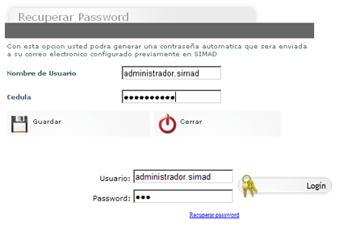

| Seleccione la opción sobre la que necesita ayuda |
|
|
Olvido de contraseña en
SIMAD 4.0 |
|
|
|
|
Si usted ha olvidado su contraseña en SIMAD 4.0 , este instructivo le guiará paso a paso en el proceso de recuperación de su contraseña.
Si por algún motivo usted olvida su password puede crear uno nuevo realizando los siguientes pasos:
- Haga clic en recuperar password.
- Digite su nombre de usuario.
- Digite el número de su cédula.
El sistema enviará un mail al correo electrónico inscrito previamente con su nuevo password.

|